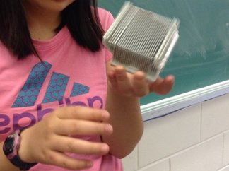

2016-07-16
0800
Guardian of A-Dell: "She was perfectly fine when I checked on her at 8!"
0900
A-Dell found unresponsive. Comatose state determined 1 hour after examination by local hospital. Cause undetermined.
1400
A-Dell transferred to Xerox PARC Laboratory by helicopter A-0365. Case taken over by specialist division Arkin-topia.
2016-7-17
0800
No change in state from A-Dell. All conventional methods of revival has been tried. Preparing for dismantlement.
0830
Cover of A-Dell has been removed. No damage observed. Further examination required.
0900
Battery removed from socket by plastic screwdriver. Wrist grounding strap worn by all members of dismantlement team as precautionary measures. All visible cables removed successfully. No problems reported.
0930
AC power cable disconnected from power supply.
1000
Control panel removed and scanned for errors. None found.
1015
AGP and DVI Adapter cards removed.
1045

Silver case found. Preliminary tests on object test positive for a hard drive, to be confirmed by further testing. Two drives found after front panel was removed, experts call them the floppy disk and the CD/DVD drive.
1115
Removal of I/O panel. Panel was attached to multiple cables (veins) and screws. Extreme caution exercised. Mounting screw secured panel to body of A-Dell, slight difficulty in extraction. Procedure completed without error.
1200

Green card (memory module) discovered. Memory module promptly removed.
1220
Heatsink found. Cooling fan disconnected. 12 volt power cable removed. Remover required two ground wrist straps as precautionary measures.
1240
Gentle rocking required to remove heatsink / blower assembly from microprocessor. No signs of malfunctions or errors.
1300
Removal of motherboard ordered by head of Arkin-topia. Mild protests from experts team.
1310

All components restricting motherboard removed and cables (veins) disconnected. Board slid toward the front of A-Dell and lifted successfully.
1400
No error found. Team request to head to abort mission.
1445
Permission granted by head of Arkin-topia.
1600
Reassembling finished. No errors made.
1605
Final testing suggested by deputy head Victoria Windsor. Power cord plugged back in and preparing for reboot.
1610
A-Dell revived. Unresponsiveness due to lack of electricity.
1700

Mission complete.